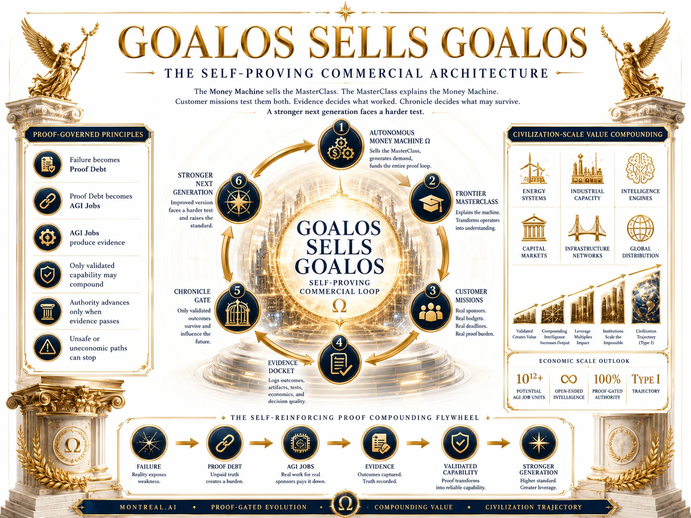

Execution
Agents now work across tools, files, applications, and long-running workflows.
GoalOS turns important objectives into bounded missions, missions into inspectable evidence, evidence into governed private capability—and then requires a fresh generation to demonstrate improvement.
⚠ Static, data-minimized public site. Do not transmit confidential, personal, privileged, regulated, classified, security-sensitive, or third-party information. A written agreement must precede any sensitive exchange.

Agents now work across tools, files, applications, and long-running workflows.
Frontier systems generate, execute, evaluate, and select candidate improvements.
Durable value is moving from prompts to tested, versioned, transferable skills.
Verified surplus can fund compute, data, science, energy, industry, and harder missions.
Money Machine Ω sells the MasterClass. The MasterClass explains the Machine. Customer missions test both. Chronicle admits only what passes. A successor then faces a harder test.



Diagnose almost for free. Price by value at stake. Prove one consequential outcome. Convert it into recurring control. Charge for governed invocation of validated private capability.
The external category wedge is AI deployment proof. The immediate cash engine is RFP-to-Revenue. Compliance Evidence creates recurrence.
Decide whether to deploy, buy, scale, repair, or stop.
Keep obligations, controls, and evidence continuously inspectable.
Turn commercial claims into evidence-backed revenue.
Decide whether to invest, acquire, procure, condition, or stop.
Determine whether a venture deserves to exist, pivot, scale, or stop.
Only current direct *.agent.agi.eth identities with valid, scoped, revocable entitlements may invoke Chronicle-admitted, latest-root-verifiable private capabilities—without the underlying intelligence leaving MONTREAL.AI’s protected execution boundary.